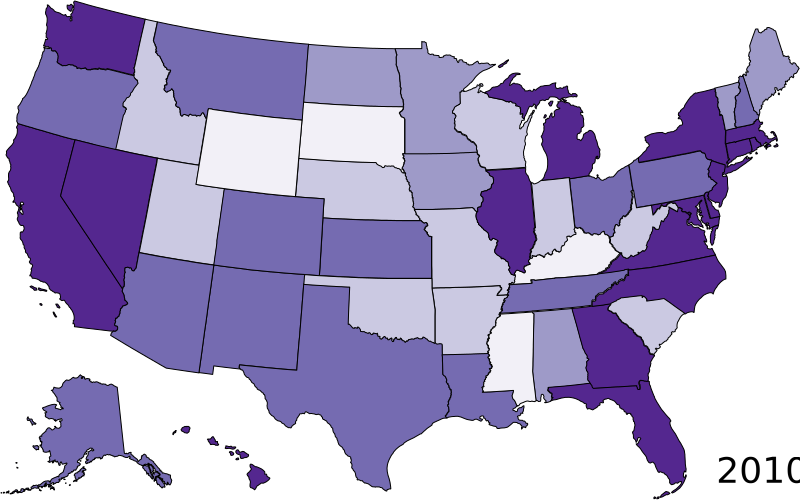
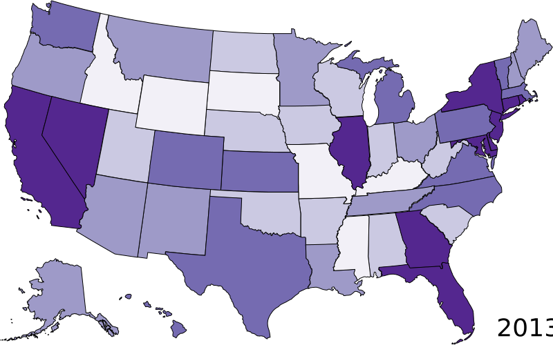
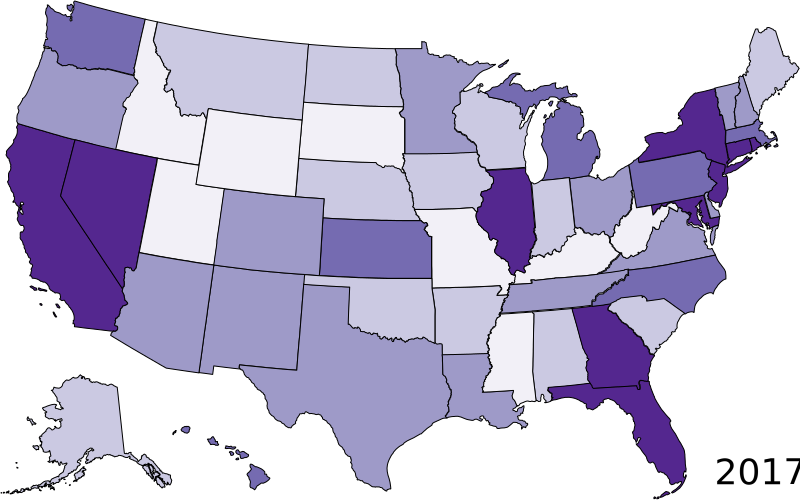
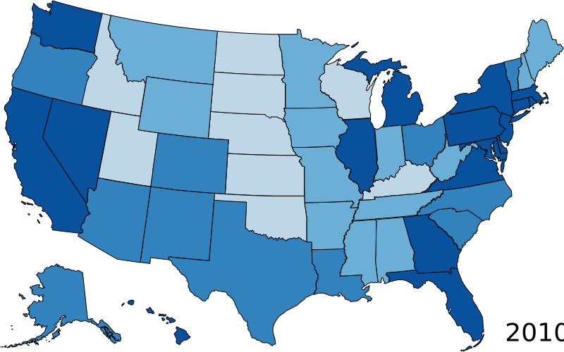
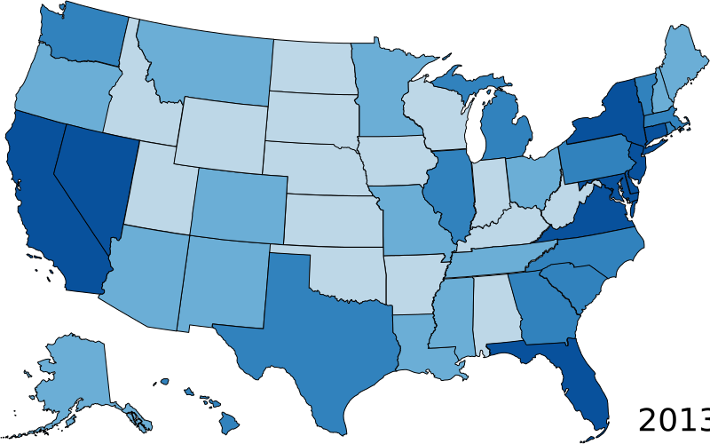
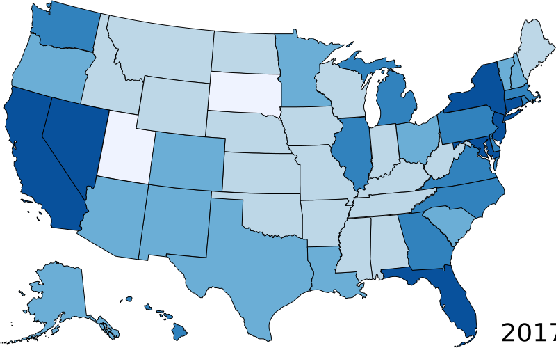

Is There A Silent Majority of Women Wanting Abortions?
Abortion rates have been declining sharply in the last 15 years. Many anti-choice groups attribute that
to the restrictive abortion laws put into place while pro-choice groups attribute this to better sexual education.
The policy implications of this decline is important to understand. In this article, we will see if the demand for abortion
seems to decline with the supply. If demand, especially in states with more restrictive laws, is high that would support
the fact that there are women that are interested in abortions that would get them if the barriers to get one was lower.
Abortion Rate Over Time
After the monumentous decision in Roe v. Wade, the abortion rate increased throughout the 70s and held steady throughout the 80s
despite discriminatory policies like the Hyde Park Amendment. After the "undue burden" framework was created in Planned Parenthood v. Casey in 1992,
rates declined sharply the year follwing and then steadily up until 2008. From then on, abortion rates have continued to decrease.
Source: Guttmacher Institute
Now, let's try to understand the breakdown of the decline in abortion in these last 15 years by state.
Abortion by State of Occurrence



Abortion by State of Residence



Source: Kaiser Family Foundation using Guttmacher Institute data
Through the lightening of the maps as we move forward in time, we can see really see the decline in the abortion rate.
Additionally, we can see that there was a decline both by state of occurrence and state of residence. We would expect
state of occurrence to decline with the more restrictive abortion laws but since rates are still declining by rate of
residence, we know that either it is very hard for women to get to a state with abortion options or that there is less
unplanned pregnancy.
Restrictive abortion laws in 2017
In the last 10 years the number of restrictive abortion laws have increased exponentially.
It is important to understand if the decrease in the abortion rate is due to this. Between 2011 and 2017
states enacted a total of 394 new restrictions. Are these restricted laws interfering with individual's ability to make decisions regarding their reproductive options?
Hover over a state to see what abortion access is like there
Source: Kaiser Family Foundation using Guttmacher Institute data
Abortion through the lens of Google Trends
It has been said that Google is like a truth serum. So looking at the number of relative searches
in a state for abortion can help us see if See in which state abortion was most popular for each year.
Values are calculated on a scale from 0 to 100, where 100 is the location with the most popularity as a fraction of total searches in that location, a value of 50 indicates a location which is half as popular.
.svg)